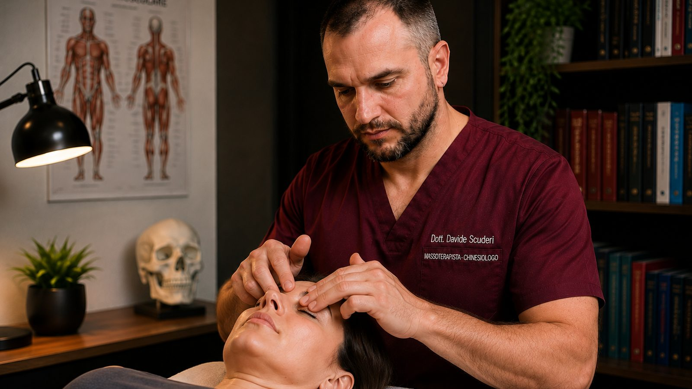
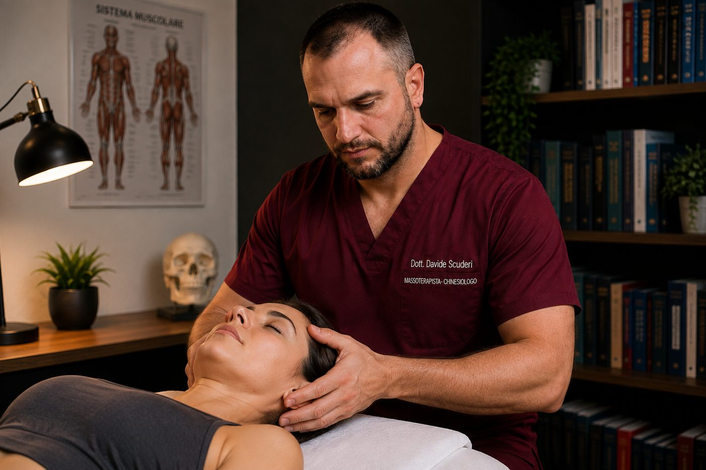

Kinesiologia Studio, Modena
Cosa faccio in studio, e in che ordine. Un trattamento manuale del viso in cinque passaggi, sempre nello stesso ordine e sempre dopo aver escluso ciò che spetta al medico. Lo faccio da vent'anni: qui trovi scritto esattamente cosa succede in quella seduta.
5,0 su Google con 128 recensioni. Via Capilupi 21, Direzionale Toscanini, Modena.

Il naso che si chiude sempre dallo stesso lato. La pressione sorda sotto gli occhi e sugli zigomi. La testa pesante nelle giornate umide o al cambio di stagione. La sensazione di avere il viso pieno, come se lì dentro qualcosa non si muovesse.
Sono sensazioni che molte persone si portano dietro per anni, spesso dopo aver già intrapreso la strada medica e aver ricevuto una risposta. Il fastidio resta, e non sanno più a chi chiederlo.
Sono quattro paia di cavità piene d'aria scavate nelle ossa del viso e del cranio: sopra le sopracciglia (frontali), dentro gli zigomi (mascellari), fra gli occhi (etmoidali) e più in profondità, dietro il naso (sfenoidali). Comunicano tutte con le fosse nasali attraverso piccoli fori chiamati osti.
Dentro sono rivestiti da una mucosa che produce muco, e da ciglia microscopiche che lo spingono sempre nella stessa direzione: verso gli osti, poi nel naso, poi verso la gola, dove viene deglutito senza che tu te ne accorga. Succede tutto il giorno, tutti i giorni.
Servono a scaldare e umidificare l'aria che respiri, ad alleggerire le ossa del cranio e a dare risonanza alla voce.
Il punto che conta è questo: è un sistema di drenaggio. Funziona finché il muco resta fluido e gli osti restano aperti. Quando la mucosa si gonfia, l'ostio si stringe e il muco ristagna. È lì che nascono la pressione, il senso di pieno e il dolore al viso.
Le cause più frequenti di sinusite sono queste:
Quale di queste riguardi te è una domanda medica, e la risposta la dà il medico: alcune di queste cause hanno bisogno di una terapia o di uno specialista, non di un trattamento manuale. Per questo la prima cosa che faccio non è trattare.
Prima di toccarti, verifico i segni che indicano che la risposta non è manuale.
In questi casi la seduta non parte. Non è prudenza formale: su un'infiammazione acuta il lavoro manuale non è indicato, e insistere non aiuta nessuno. Se invece siamo fuori da queste situazioni, si lavora.
Cinque passaggi, sempre in quest'ordine.
Si comincia lontano dal viso, dai punti in cui il sistema linfatico raccoglie e scarica: collo e clavicole. È un lavoro leggero, quasi impercettibile. Serve ad aprire la via di uscita prima di muovere qualsiasi cosa più in alto.
Sacchetti di sale riscaldati appoggiati sul viso, per rilassare i tessuti e la fascia. È il momento più piacevole della seduta e non è un preambolo: su un tessuto freddo e contratto le manovre successive avrebbero molta meno presa.
Attrezzi in legno di forme diverse, scelti in base alla zona: zigomi, fronte, contorno del naso, base del cranio. Mobilizzano i tessuti in modo più profondo e regolare di quanto riesca la sola mano.
Il muco viene accompagnato lungo la sua via naturale, verso il retro e verso il basso. È la parte che le persone percepiscono di più, spesso già durante la seduta o nell'ora successiva.
Manualità di massaggio rilassanti sul viso, poi si torna alle stazioni linfatiche del collo per scaricare di nuovo quello che si è mosso.

L'ordine è il ragionamento, e vale la pena spiegarlo: è ciò che distingue un trattamento da una sequenza di manovre.
Non si muove niente prima di aver aperto la strada: se scarichi verso stazioni chiuse, quello che sposti non ha dove andare. Non si lavora in profondità su un tessuto freddo, perché il calore è ciò che lo rende trattabile. E si chiude sempre riaprendo lo scarico, perché la seduta muove del materiale e quel materiale deve uscire.
Ogni passaggio prepara il successivo. Toglierne uno, o invertirli, non è la stessa cosa fatta più in fretta: è un'altra cosa.
Non curo la sinusite: è una diagnosi medica e la terapia la decide il medico. Non ti prometto un risultato, e non ti dico quante sedute serviranno prima di averti visto.
Quello che posso dirti è cosa faccio, come lo faccio e perché in quell'ordine. Lo trovi scritto qui sopra, senza omissioni. E che questo lavoro lo faccio da vent'anni, su persone arrivate con il viso pesante e il naso chiuso.
Alla prima seduta segno alcuni riferimenti concreti: da quale lato senti la chiusura, dove senti la pressione, quanto dura e quanto ti limita nella giornata.
Alla seduta successiva confrontiamo. Se qualcosa si è mosso, si prosegue in quella direzione. Se dopo un numero ragionevole di sedute non è cambiato niente, si smette e ti rimando al medico. Non ha senso continuare un percorso che non produce cambiamento.
No. È un trattamento sul viso, con calore e manovre leggere. La parte con gli attrezzi si sente, ma non deve essere dolorosa: si regola su di te.
Portala comunque, insieme a quello che ti ha detto il medico. Mi serve per sapere da dove partiamo.
Non lo so prima di averti visto, e diffida di chi te lo dice al telefono. Dopo la prima seduta ti do un'idea e un momento preciso in cui ci fermiamo a verificare.
Dimmelo prima di prenotare. In fase acuta, o a terapia appena iniziata, spesso la cosa giusta è aspettare.
Prenota una valutazione: la prima cosa che facciamo è guardare, non trattare.
Dott. Scuderi Davide, Chinesiologo e Massoterapista MCB. Non sono medico e non formulo diagnosi: la diagnosi e la terapia delle patologie dei seni paranasali e delle vie respiratorie spettano al medico. In presenza di patologie diagnosticate intervengo su indicazione medica. Le informazioni di questa pagina hanno finalità informativa e non sostituiscono il parere del medico.